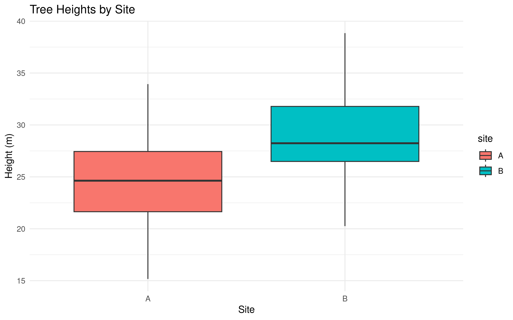
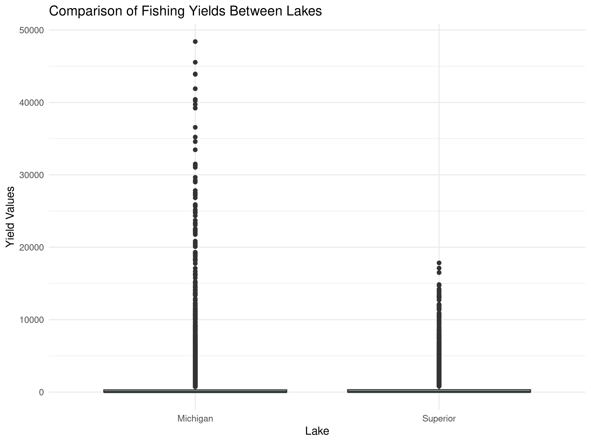
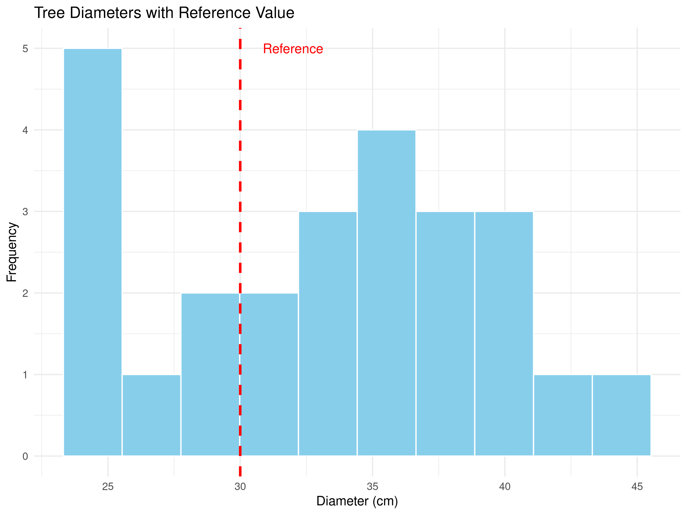
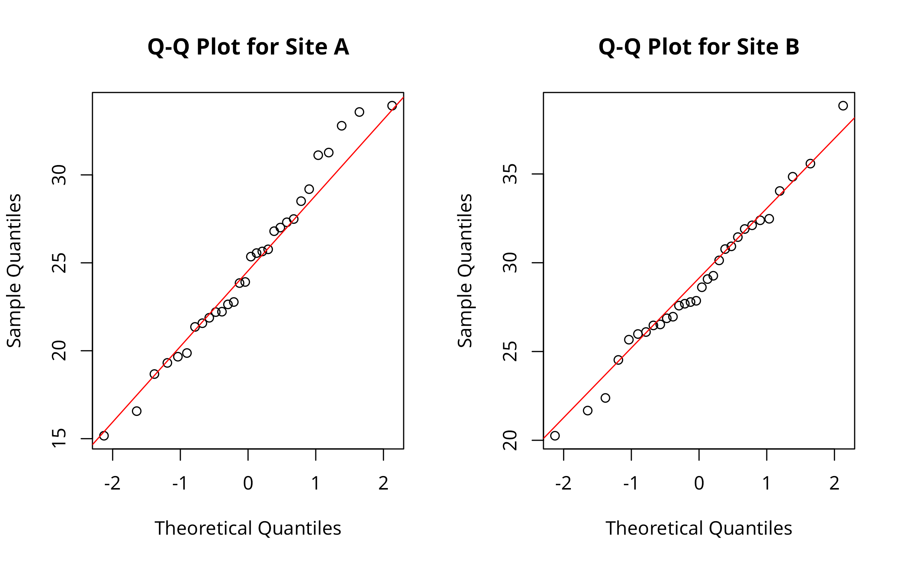
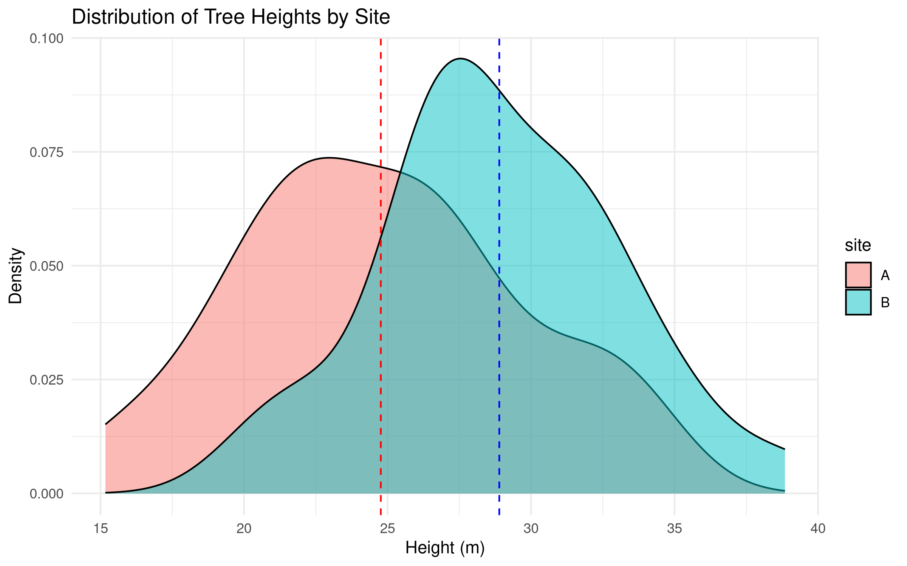
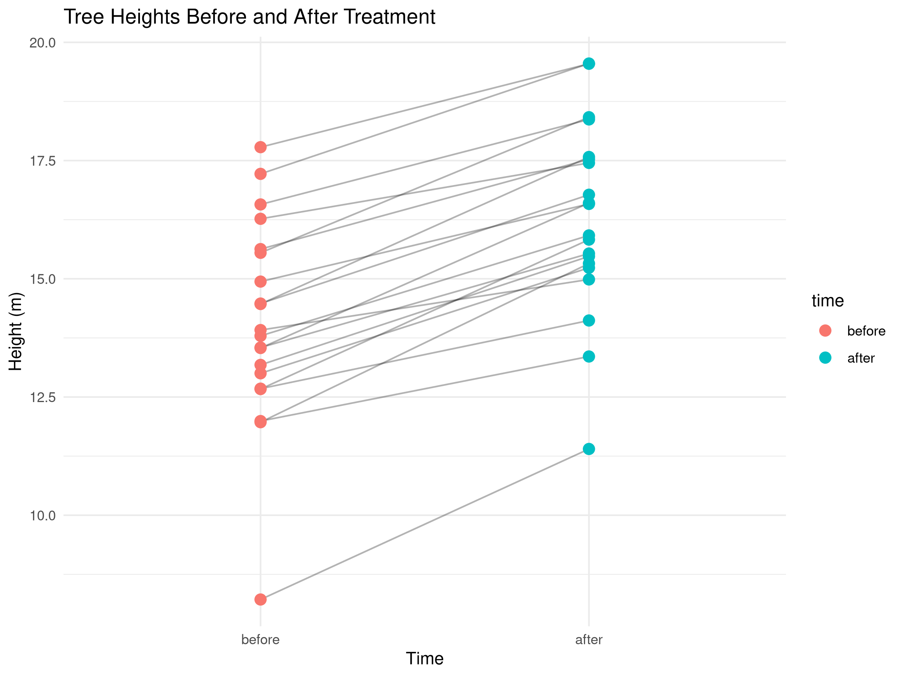
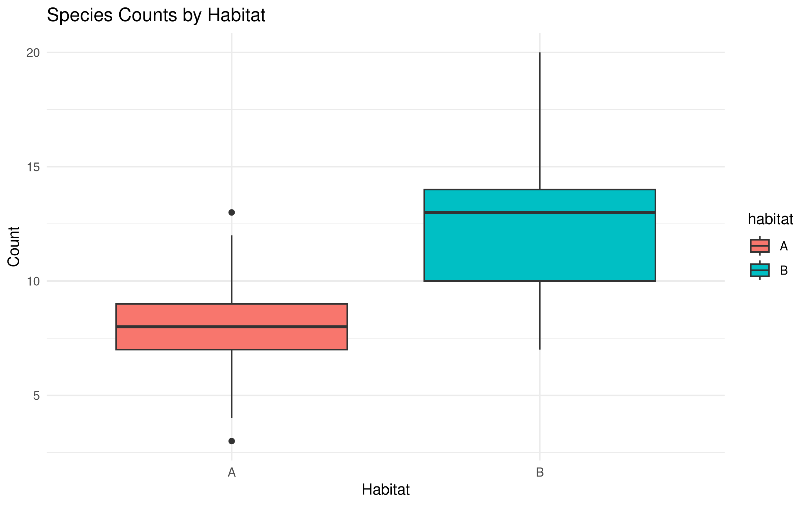
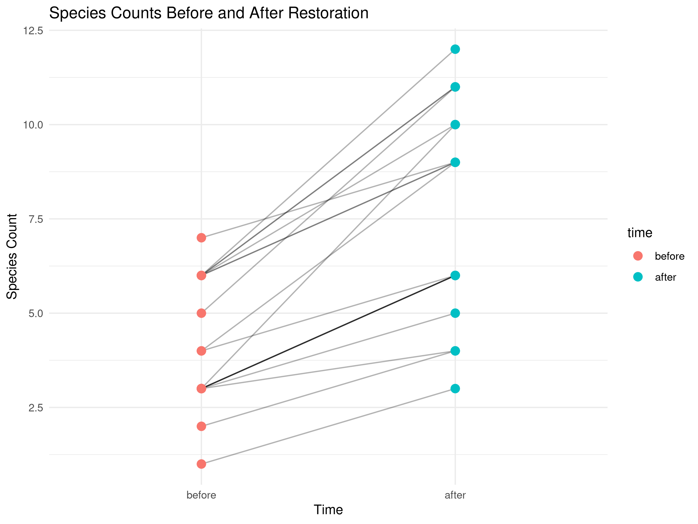
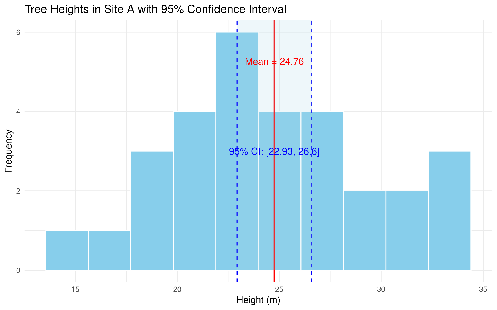

Hypothesis testing is a fundamental statistical approach used to make inferences about populations based on sample data. In ecological and forestry research, hypothesis testing helps researchers determine whether observed patterns or differences are statistically significant or merely due to random chance.
4.2 The Logic of Hypothesis Testing
4.2.1 Null and Alternative Hypotheses
The foundation of hypothesis testing involves two competing hypotheses:
Null Hypothesis (H₀): This is the default position that assumes no effect, no difference, or no relationship exists. For example, “There is no difference in tree height between two forest types.”
Alternative Hypothesis (H₁ or Hₐ): This is the hypothesis that the researcher typically wants to provide evidence for. For example, “There is a significant difference in tree height between two forest types.”
4.2.2 Example in Ecological Research
Let’s consider a specific example from forestry research:
Research Question: Is there a difference in the average height of oak trees between Site A and Site B?
Null Hypothesis (H₀): There is no difference in the average height of oak trees between Site A and Site B.
Alternative Hypothesis (H₁): There is a significant difference in the average height of oak trees between Site A and Site B.
4.3 Understanding P-values and Significance Levels
4.3.1 The P-value
The p-value is the probability of obtaining results at least as extreme as the observed results, assuming that the null hypothesis is true. In simpler terms, it measures the strength of evidence against the null hypothesis.
A small p-value (typically ≤ 0.05) indicates strong evidence against the null hypothesis, leading to its rejection.
A large p-value (> 0.05) indicates weak evidence against the null hypothesis, leading to a failure to reject it.
PROFESSIONAL TIP: Interpreting P-values
When reporting p-values in scientific publications:
Avoid describing results as “statistically significant” or “not significant” without providing the actual p-value
Report exact p-values (e.g., p = 0.032) rather than just p < 0.05, when possible
Remember that p-values do not measure the size or importance of an effect—only the evidence against the null hypothesis
Consider reporting effect sizes and confidence intervals alongside p-values for more comprehensive interpretation
Be cautious about p-values just above or below the significance threshold (e.g., p = 0.049 vs. p = 0.051)—they represent similar levels of evidence
4.3.2 Significance Level (α)
The significance level, often denoted as α (alpha), represents the threshold for statistical significance. In most research, it is set at 0.05 (5%). This value signifies the maximum acceptable probability of making a Type I error — wrongly rejecting the null hypothesis when it is true.
4.4 Types of Errors in Hypothesis Testing
4.4.1 Type I and Type II Errors
In hypothesis testing, two types of errors can occur:
Type I Error: Rejecting a true null hypothesis (false positive).
Probability = α (significance level)
Example: Concluding there’s a difference in tree heights when there actually isn’t.
Type II Error: Failing to reject a false null hypothesis (false negative).
Probability = β
Example: Failing to detect a real difference in tree heights.
4.4.2 Experimental Design
PROFESSIONAL TIP: Improving Statistical Power
To reduce Type II errors and increase the power of your study:
Increase sample size: Larger samples provide more precise estimates and greater power
Reduce measurement variability: Use standardized protocols and calibrated instruments
Use paired or repeated measures designs when appropriate: These control for individual variation
Conduct a power analysis before data collection: This helps determine the minimum sample size needed
Consider using one-tailed tests when appropriate: These provide more power than two-tailed tests when the direction of effect is known
Report confidence intervals: These provide information about effect size and precision
4.5 Common Hypothesis Tests in Ecological Research
4.6 Example: Two-Sample t-test
Code
# Simulate tree height data for two sitesset.seed(123)site_A <-rnorm(30, mean =25, sd =5) # 30 trees with mean height 25msite_B <-rnorm(30, mean =28, sd =5) # 30 trees with mean height 28m# Create a data frametree_data <-data.frame(height =c(site_A, site_B),site =factor(rep(c("A", "B"), each =30)))# Visualize the datalibrary(ggplot2)ggplot(tree_data, aes(x = site, y = height, fill = site)) +geom_boxplot() +labs(title ="Tree Heights by Site",x ="Site",y ="Height (m)") +theme_minimal()

Code
# Perform a t-testt_test_result <-t.test(height ~ site, data = tree_data)print(t_test_result)
Welch Two Sample t-test
data: height by site
t = -3.5092, df = 56.559, p-value = 0.0008892
alternative hypothesis: true difference in means between group A and group B is not equal to 0
95 percent confidence interval:
-6.482713 -1.771708
sample estimates:
mean in group A mean in group B
24.76448 28.89169
Code
# Interpret the resultalpha <-0.05if (t_test_result$p.value < alpha) {cat("With a p-value of", round(t_test_result$p.value, 4), "we reject the null hypothesis.\n","There is a statistically significant difference in tree heights between sites.")} else {cat("With a p-value of", round(t_test_result$p.value, 4), "we fail to reject the null hypothesis.\n","There is not enough evidence to conclude a significant difference in tree heights.")}
With a p-value of 9e-04 we reject the null hypothesis.
There is a statistically significant difference in tree heights between sites.
Code
# Create a formatted table of the resultst_test_table <-data.frame(Statistic =c("t-value", "Degrees of Freedom", "p-value", "Mean Difference", "95% CI Lower", "95% CI Upper"),Value =c(round(t_test_result$statistic, 3),round(t_test_result$parameter, 1),format.pval(t_test_result$p.value, digits =3),round(diff(t_test_result$estimate), 2),round(t_test_result$conf.int[1], 2),round(t_test_result$conf.int[2], 2) ))# Display the formatted tableknitr::kable(t_test_table, caption ="Two-Sample t-Test Results: Tree Heights by Site",align =c("l", "r"),format ="html") %>% kableExtra::kable_styling(bootstrap_options =c("striped", "hover"), full_width =FALSE,position ="center")
Two-Sample t-Test Results: Tree Heights by Site
Statistic
Value
t-value
-3.509
Degrees of Freedom
56.6
p-value
0.000889
Mean Difference
4.13
95% CI Lower
-6.48
95% CI Upper
-1.77
4.7 Example: Using Marine Dataset for Two-Sample t-test
Let’s apply the t-test to analyze real data. We’ll use our marine dataset to compare fishing yields between different regions:
Code
# Load necessary packageslibrary(tidyverse)# Load the marine datasetmarine_data <-read_csv("../data/marine/ocean_data.csv")# View the structure of the datasetstr(marine_data)
spc_tbl_ [65,706 × 7] (S3: spec_tbl_df/tbl_df/tbl/data.frame)
$ year : num [1:65706] 1991 1991 1991 1991 1991 ...
$ lake : chr [1:65706] "Erie" "Erie" "Erie" "Erie" ...
$ species : chr [1:65706] "American Eel" "American Eel" "American Eel" "American Eel" ...
$ grand_total: num [1:65706] 1 1 1 1 1 1 0 0 0 0 ...
$ comments : chr [1:65706] NA NA NA NA ...
$ region : chr [1:65706] "Michigan (MI)" "New York (NY)" "Ohio (OH)" "Pennsylvania (PA)" ...
$ values : num [1:65706] 0 0 0 0 0 1 0 0 0 0 ...
- attr(*, "spec")=
.. cols(
.. year = col_double(),
.. lake = col_character(),
.. species = col_character(),
.. grand_total = col_double(),
.. comments = col_character(),
.. region = col_character(),
.. values = col_double()
.. )
- attr(*, "problems")=<externalptr>
Code
# Let's compare fishing yields between two lakesif("lake"%in%colnames(marine_data) &"values"%in%colnames(marine_data)) {# Select two lakes for comparison lake_comparison <- marine_data %>%filter(lake %in%c("Michigan", "Superior")) %>%select(lake, values)# Perform t-test t_test_result <-t.test(values ~ lake, data = lake_comparison)# Display the resultsprint(t_test_result)# Visualize the comparisonggplot(lake_comparison, aes(x = lake, y = values)) +geom_boxplot(fill ="lightblue") +labs(title ="Comparison of Fishing Yields Between Lakes",x ="Lake", y ="Yield Values") +theme_minimal()} else {# If the columns don't match exactly, adapt to the actual structure# This is a fallback to ensure the code runs with the actual dataprint("Column names don't match expected structure. Adapting...")# Identify numeric columns for analysis numeric_cols <-sapply(marine_data, is.numeric)if(sum(numeric_cols) >0) { numeric_col <-names(marine_data)[numeric_cols][1]# Identify a categorical column for grouping cat_cols <-sapply(marine_data, function(x) is.character(x) ||is.factor(x))if(sum(cat_cols) >0) { cat_col <-names(marine_data)[cat_cols][1]# Get the two most frequent categories top_categories <-names(sort(table(marine_data[[cat_col]]), decreasing =TRUE)[1:2])# Filter data for these categories comparison_data <- marine_data %>%filter(!!sym(cat_col) %in% top_categories) %>%select(!!sym(cat_col), !!sym(numeric_col))# Rename columns for easier formula creationnames(comparison_data) <-c("category", "value")# Perform t-test t_test_result <-t.test(value ~ category, data = comparison_data)# Display the resultsprint(t_test_result)# Visualize the comparisonggplot(comparison_data, aes(x = category, y = value)) +geom_boxplot(fill ="lightblue") +labs(title =paste("Comparison of", numeric_col, "Between Groups"),x = cat_col, y = numeric_col) +theme_minimal() } }}
Welch Two Sample t-test
data: values by lake
t = 7.0924, df = 16555, p-value = 1.371e-12
alternative hypothesis: true difference in means between group Michigan and group Superior is not equal to 0
95 percent confidence interval:
164.1330 289.5019
sample estimates:
mean in group Michigan mean in group Superior
759.5080 532.6905

4.8 Types of Errors in Hypothesis Testing
4.8.1 Type I and Type II Errors
In hypothesis testing, two types of errors can occur:
Type I Error: Rejecting a true null hypothesis (false positive).
Probability = α (significance level)
Example: Concluding there’s a difference in tree heights when there actually isn’t.
Type II Error: Failing to reject a false null hypothesis (false negative).
Probability = β
Example: Failing to detect a real difference in tree heights.
4.8.2 Statistical Power
Statistical power is the probability of correctly rejecting a false null hypothesis (1 - β). Factors affecting power include:
Sample size
Effect size
Significance level (α)
Variability in the data
Code
# Demonstrate power calculation for a t-testlibrary(pwr)# Calculate power for our exampleeffect_size <- (28-25) /5# (mean difference) / standard deviationpower_result <-pwr.t.test(n =30, # Sample size per groupd = effect_size, # Cohen's d effect sizesig.level =0.05, # Significance leveltype ="two.sample", # Two-sample t-testalternative ="two.sided"# Two-sided alternative)print(power_result)
Two-sample t test power calculation
n = 30
d = 0.6
sig.level = 0.05
power = 0.6275046
alternative = two.sided
NOTE: n is number in *each* group
Two-sample t test power calculation
n = 44.58577
d = 0.6
sig.level = 0.05
power = 0.8
alternative = two.sided
NOTE: n is number in *each* group
4.9 One-Sample Tests
One-sample tests compare a sample mean to a known or hypothesized population value.
4.9.1 One-Sample t-Test
The one-sample t-test is used when: - The sample is approximately normally distributed - The population standard deviation is unknown
Code
# Simulate tree diameter dataset.seed(456)tree_diameters <-rnorm(25, mean =32, sd =5) # 25 trees with mean diameter 32cm# Known reference value (e.g., from previous studies)reference_diameter <-30# cm# Visualize the dataggplot(data.frame(diameter = tree_diameters), aes(x = diameter)) +geom_histogram(bins =10, fill ="skyblue", color ="white") +geom_vline(xintercept = reference_diameter, color ="red", linetype ="dashed", size =1) +labs(title ="Tree Diameters with Reference Value",x ="Diameter (cm)",y ="Frequency") +annotate("text", x = reference_diameter +2, y =5, label ="Reference", color ="red") +theme_minimal()

Code
# Perform a one-sample t-testone_sample_result <-t.test(tree_diameters, mu = reference_diameter)# Create a formatted table of the resultsone_sample_table <-data.frame(Statistic =c("t-value", "Degrees of Freedom", "p-value", "Mean Difference", "95% CI Lower", "95% CI Upper"),Value =c(round(one_sample_result$statistic, 3),round(one_sample_result$parameter, 1),format.pval(one_sample_result$p.value, digits =3),round(mean(tree_diameters) - reference_diameter, 2),round(one_sample_result$conf.int[1], 2),round(one_sample_result$conf.int[2], 2) ))# Display the formatted tableknitr::kable(one_sample_table, caption ="One-Sample t-Test Results: Tree Diameters vs. Reference Value",align =c("l", "r"),format ="html") %>% kableExtra::kable_styling(bootstrap_options =c("striped", "hover"), full_width =FALSE,position ="center")
One-Sample t-Test Results: Tree Diameters vs. Reference Value
Statistic
Value
t-value
2.731
Degrees of Freedom
24
p-value
0.0116
Mean Difference
3.24
95% CI Lower
30.79
95% CI Upper
35.69
4.10 Two-Sample Tests
Two-sample tests compare means between two independent groups.
4.10.1 Independent Samples t-Test
The independent samples t-test is used when: - Both samples are approximately normally distributed - The two samples are independent
Code
# We already performed this test in our initial example# Let's visualize it differently# Create density plotsggplot(tree_data, aes(x = height, fill = site)) +geom_density(alpha =0.5) +labs(title ="Distribution of Tree Heights by Site",x ="Height (m)",y ="Density") +theme_minimal()

Code
# Add mean linesggplot(tree_data, aes(x = height, fill = site)) +geom_density(alpha =0.5) +geom_vline(xintercept =mean(site_A), color ="red", linetype ="dashed") +geom_vline(xintercept =mean(site_B), color ="blue", linetype ="dashed") +labs(title ="Distribution of Tree Heights by Site",x ="Height (m)",y ="Density") +theme_minimal()

Code
# Perform the t-test again for demonstrationt_test_result <-t.test(height ~ site, data = tree_data, var.equal =TRUE)# Create a formatted table of the resultst_test_table <-data.frame(Statistic =c("t-value", "Degrees of Freedom", "p-value", "Mean Difference", "95% CI Lower", "95% CI Upper"),Value =c(round(t_test_result$statistic, 3),round(t_test_result$parameter, 1),format.pval(t_test_result$p.value, digits =3),round(diff(t_test_result$estimate), 2),round(t_test_result$conf.int[1], 2),round(t_test_result$conf.int[2], 2) ))# Display the formatted tableknitr::kable(t_test_table, caption ="Independent Samples t-Test Results: Tree Heights by Site",align =c("l", "r"),format ="html") %>% kableExtra::kable_styling(bootstrap_options =c("striped", "hover"), full_width =FALSE,position ="center")
Independent Samples t-Test Results: Tree Heights by Site
The paired samples t-test is used when: - Measurements are taken from the same subjects under different conditions - The differences between pairs are approximately normally distributed
Code
# Simulate paired data (e.g., tree growth before and after treatment)set.seed(789)before_treatment <-rnorm(20, mean =15, sd =3)after_treatment <- before_treatment +rnorm(20, mean =2.5, sd =1) # Growth effect# Create a data framegrowth_data <-data.frame(tree_id =1:20,before = before_treatment,after = after_treatment,difference = after_treatment - before_treatment)# Visualize paired datagrowth_long <- reshape2::melt(growth_data[, c("tree_id", "before", "after")], id.vars ="tree_id", variable.name ="time", value.name ="height")ggplot(growth_long, aes(x = time, y = height, group = tree_id)) +geom_line(alpha =0.3) +geom_point(aes(color = time), size =3) +labs(title ="Tree Heights Before and After Treatment",x ="Time",y ="Height (m)") +theme_minimal()

Code
# Perform a paired t-testpaired_result <-t.test(growth_data$after, growth_data$before, paired =TRUE)# Create a formatted table of the resultspaired_table <-data.frame(Statistic =c("t-value", "Degrees of Freedom", "p-value", "Mean Difference", "95% CI Lower", "95% CI Upper"),Value =c(round(paired_result$statistic, 3),round(paired_result$parameter, 1),format.pval(paired_result$p.value, digits =3),round(mean(growth_data$difference), 2),round(paired_result$conf.int[1], 2),round(paired_result$conf.int[2], 2) ))# Display the formatted tableknitr::kable(paired_table, caption ="Paired Samples t-Test Results: Tree Heights Before and After Treatment",align =c("l", "r"),format ="html") %>% kableExtra::kable_styling(bootstrap_options =c("striped", "hover"), full_width =FALSE,position ="center")
Paired Samples t-Test Results: Tree Heights Before and After Treatment
Statistic
Value
t-value
13.843
Degrees of Freedom
19
p-value
2.24e-11
Mean Difference
2.21
95% CI Lower
1.87
95% CI Upper
2.54
Code
# Create a summary statistics tablegrowth_summary <- growth_data %>%summarize(`Median Before`=median(before),`Mean Before`=round(mean(before), 2),`Median After`=median(after),`Mean After`=round(mean(after), 2),`Median Difference`=median(difference),`Mean Difference`=round(mean(difference), 2) )# Display the summary statistics tableknitr::kable(growth_summary, caption ="Summary Statistics: Tree Heights Before and After Treatment",align =rep("r", 6),format ="html") %>% kableExtra::kable_styling(bootstrap_options =c("striped", "hover"), full_width =FALSE,position ="center")
Summary Statistics: Tree Heights Before and After Treatment
Median Before
Mean Before
Median After
Mean After
Median Difference
Mean Difference
13.85453
14.07
16.25036
16.28
2.178109
2.21
4.11 Non-Parametric Tests
Non-parametric tests are used when the assumptions of parametric tests (like normality) are violated.
4.11.1 Mann-Whitney U Test (Wilcoxon Rank-Sum Test)
This is a non-parametric alternative to the independent samples t-test.
Code
# Simulate non-normal data (e.g., species counts in two habitats)set.seed(101)habitat_A <-rpois(25, lambda =8) # Poisson distribution for count datahabitat_B <-rpois(25, lambda =12)# Create a data framespecies_data <-data.frame(count =c(habitat_A, habitat_B),habitat =factor(rep(c("A", "B"), each =25)))# Visualize the dataggplot(species_data, aes(x = habitat, y = count, fill = habitat)) +geom_boxplot() +labs(title ="Species Counts by Habitat",x ="Habitat",y ="Count") +theme_minimal()

Code
# Check for normalityshapiro_A <-shapiro.test(habitat_A)shapiro_B <-shapiro.test(habitat_B)# Create a table for normality test resultsnormality_table <-data.frame(Habitat =c("Habitat A", "Habitat B"),`W Statistic`=c(round(shapiro_A$statistic, 3), round(shapiro_B$statistic, 3)),`p-value`=c(format.pval(shapiro_A$p.value, digits =3), format.pval(shapiro_B$p.value, digits =3)),Interpretation =c(ifelse(shapiro_A$p.value <0.05, "Non-normal distribution", "Normal distribution"),ifelse(shapiro_B$p.value <0.05, "Non-normal distribution", "Normal distribution") ))# Display the normality test resultsknitr::kable(normality_table, caption ="Shapiro-Wilk Test for Normality",align =c("l", "c", "c", "l"),format ="html") %>% kableExtra::kable_styling(bootstrap_options =c("striped", "hover"), full_width =FALSE,position ="center")
Shapiro-Wilk Test for Normality
Habitat
W.Statistic
p.value
Interpretation
Habitat A
0.972
0.689
Normal distribution
Habitat B
0.976
0.787
Normal distribution
Code
# Perform Mann-Whitney U testwilcox_result <-wilcox.test(count ~ habitat, data = species_data)# Create a formatted table of the resultswilcox_table <-data.frame(Statistic =c("W-value", "p-value"),Value =c( wilcox_result$statistic,format.pval(wilcox_result$p.value, digits =3) ))# Display the formatted tableknitr::kable(wilcox_table, caption ="Mann-Whitney U Test Results: Species Counts by Habitat",align =c("l", "r"),format ="html") %>% kableExtra::kable_styling(bootstrap_options =c("striped", "hover"), full_width =FALSE,position ="center")
Mann-Whitney U Test Results: Species Counts by Habitat
This is a non-parametric alternative to the paired samples t-test.
Code
# Simulate non-normal paired dataset.seed(202)before_restoration <-rpois(20, lambda =5)after_restoration <- before_restoration +rpois(20, lambda =3)# Create a data framerestoration_data <-data.frame(site_id =1:20,before = before_restoration,after = after_restoration,difference = after_restoration - before_restoration)# Visualize paired datarestoration_long <- reshape2::melt(restoration_data[, c("site_id", "before", "after")], id.vars ="site_id", variable.name ="time", value.name ="species_count")ggplot(restoration_long, aes(x = time, y = species_count, group = site_id)) +geom_line(alpha =0.3) +geom_point(aes(color = time), size =3) +labs(title ="Species Counts Before and After Restoration",x ="Time",y ="Species Count") +theme_minimal()

Code
# Perform Wilcoxon signed-rank testwilcox_paired_result <-wilcox.test(restoration_data$after, restoration_data$before, paired =TRUE)# Create a formatted table of the resultswilcox_paired_table <-data.frame(Statistic =c("V-value", "p-value"),Value =c( wilcox_paired_result$statistic,format.pval(wilcox_paired_result$p.value, digits =3) ))# Display the formatted tableknitr::kable(wilcox_paired_table, caption ="Wilcoxon Signed-Rank Test Results: Species Counts Before and After Restoration",align =c("l", "r"),format ="html") %>% kableExtra::kable_styling(bootstrap_options =c("striped", "hover"), full_width =FALSE,position ="center")
Wilcoxon Signed-Rank Test Results: Species Counts Before and After Restoration
Statistic
Value
V
V-value
210
p-value
8.53e-05
Code
# Create a summary statistics tablerestoration_summary <- restoration_data %>%summarize(`Median Before`=median(before),`Mean Before`=round(mean(before), 2),`Median After`=median(after),`Mean After`=round(mean(after), 2),`Median Difference`=median(difference),`Mean Difference`=round(mean(difference), 2) )# Display the summary statistics tableknitr::kable(restoration_summary, caption ="Summary Statistics: Species Counts Before and After Restoration",align =rep("r", 6),format ="html") %>% kableExtra::kable_styling(bootstrap_options =c("striped", "hover"), full_width =FALSE,position ="center")
Summary Statistics: Species Counts Before and After Restoration
Median Before
Mean Before
Median After
Mean After
Median Difference
Mean Difference
3.5
4.15
7.5
7.65
3
3.5
4.12 Confidence Intervals
Confidence intervals provide a range of plausible values for a population parameter.
Code
# Calculate 95% confidence interval for mean tree height in Site Aci_result <-t.test(site_A)# Create a formatted table for the confidence intervalci_table <-data.frame(Statistic =c("Sample Mean", "Standard Error", "95% CI Lower", "95% CI Upper", "Degrees of Freedom"),Value =c(round(mean(site_A), 2),round(sd(site_A)/sqrt(length(site_A)), 3),round(ci_result$conf.int[1], 2),round(ci_result$conf.int[2], 2), ci_result$parameter ))# Display the formatted tableknitr::kable(ci_table, caption ="95% Confidence Interval for Mean Tree Height in Site A",align =c("l", "r"),format ="html") %>% kableExtra::kable_styling(bootstrap_options =c("striped", "hover"), full_width =FALSE,position ="center")
95% Confidence Interval for Mean Tree Height in Site A
Statistic
Value
Sample Mean
24.760
Standard Error
0.896
95% CI Lower
22.930
95% CI Upper
26.600
Degrees of Freedom
29.000
Code
# Visualize confidence intervalmean_height <-mean(site_A)ci_lower <- ci_result$conf.int[1]ci_upper <- ci_result$conf.int[2]ggplot(data.frame(height = site_A), aes(x = height)) +geom_histogram(bins =10, fill ="skyblue", color ="white") +geom_vline(xintercept = mean_height, color ="red", size =1) +geom_vline(xintercept = ci_lower, color ="blue", linetype ="dashed") +geom_vline(xintercept = ci_upper, color ="blue", linetype ="dashed") +annotate("rect", xmin = ci_lower, xmax = ci_upper, ymin =0, ymax =Inf, alpha =0.2, fill ="lightblue") +labs(title ="Tree Heights in Site A with 95% Confidence Interval",x ="Height (m)",y ="Frequency") +annotate("text", x = mean_height, y =5, label =paste("Mean =", round(mean_height, 2)), color ="red", vjust =-1) +annotate("text", x =mean(c(ci_lower, ci_upper)), y =3, label =paste("95% CI: [", round(ci_lower, 2), ", ", round(ci_upper, 2), "]", sep =""), color ="blue") +theme_minimal()

4.13 Exercises
Formulate a hypothesis about a relationship between two variables in the forest inventory dataset.
Conduct an appropriate statistical test to evaluate your hypothesis.
Calculate the effect size for your test.
Interpret the results, including the p-value and effect size.
Create a visualization that effectively communicates your findings.
4.14 Summary
In this chapter, we’ve covered the fundamental concepts and techniques of hypothesis testing in ecological and forestry research:
Formulating null and alternative hypotheses
Understanding p-values and significance levels
Recognizing Type I and Type II errors
Calculating and interpreting statistical power
Conducting one-sample, two-sample, and paired tests
Using non-parametric alternatives when necessary
Calculating and interpreting confidence intervals
These statistical tools allow researchers to make informed inferences about populations based on sample data, helping to advance knowledge in ecology and forestry.
4.15 Statistical Power
Statistical power is the probability of correctly rejecting the null hypothesis when it is false. It is influenced by:
Sample size
Effect size
Significance level (α)
Variability in the data
Code
# Demonstrate power calculation for a t-testlibrary(pwr)# Calculate power for our exampleeffect_size <- (28-25) /5# (mean difference) / standard deviationpower_result <-pwr.t.test(n =30, # Sample size per groupd = effect_size, # Cohen's d effect sizesig.level =0.05, # Significance leveltype ="two.sample", # Two-sample t-testalternative ="two.sided"# Two-sided alternative)print(power_result)
Two-sample t test power calculation
n = 30
d = 0.6
sig.level = 0.05
power = 0.6275046
alternative = two.sided
NOTE: n is number in *each* group
Two-sample t test power calculation
n = 44.58577
d = 0.6
sig.level = 0.05
power = 0.8
alternative = two.sided
NOTE: n is number in *each* group
Source Code
---prefer-html: true---# Hypothesis Testing## IntroductionHypothesis testing is a fundamental statistical approach used to make inferences about populations based on sample data. In ecological and forestry research, hypothesis testing helps researchers determine whether observed patterns or differences are statistically significant or merely due to random chance.```{r setup, include=FALSE}# Load required packages for data analysis and visualizationlibrary(tidyverse)library(ggplot2)library(knitr)library(kableExtra)library(magrittr) # For the pipe operator %>%# Set global knitr optionsknitr::opts_chunk$set(echo =TRUE, # Display code chunkswarning =FALSE, # Suppress warningsmessage =FALSE, # Suppress messagesfig.width =8, # Default figure widthfig.height =5, # Default figure heightfig.align ="center"# Center figures)```## The Logic of Hypothesis Testing### Null and Alternative HypothesesThe foundation of hypothesis testing involves two competing hypotheses:1. **Null Hypothesis (H₀)**: This is the default position that assumes no effect, no difference, or no relationship exists. For example, "There is no difference in tree height between two forest types."2. **Alternative Hypothesis (H₁ or Hₐ)**: This is the hypothesis that the researcher typically wants to provide evidence for. For example, "There is a significant difference in tree height between two forest types."### Example in Ecological ResearchLet's consider a specific example from forestry research:- **Research Question**: Is there a difference in the average height of oak trees between Site A and Site B?- **Null Hypothesis (H₀)**: There is no difference in the average height of oak trees between Site A and Site B.- **Alternative Hypothesis (H₁)**: There is a significant difference in the average height of oak trees between Site A and Site B.## Understanding P-values and Significance Levels### The P-valueThe p-value is the probability of obtaining results at least as extreme as the observed results, assuming that the null hypothesis is true. In simpler terms, it measures the strength of evidence against the null hypothesis.- A small p-value (typically ≤ 0.05) indicates strong evidence against the null hypothesis, leading to its rejection.- A large p-value (> 0.05) indicates weak evidence against the null hypothesis, leading to a failure to reject it.::: {.callout-tip}## PROFESSIONAL TIP: Interpreting P-valuesWhen reporting p-values in scientific publications:- Avoid describing results as "statistically significant" or "not significant" without providing the actual p-value- Report exact p-values (e.g., p = 0.032) rather than just p < 0.05, when possible- Remember that p-values do not measure the size or importance of an effect—only the evidence against the null hypothesis- Consider reporting effect sizes and confidence intervals alongside p-values for more comprehensive interpretation- Be cautious about p-values just above or below the significance threshold (e.g., p = 0.049 vs. p = 0.051)—they represent similar levels of evidence:::### Significance Level (α)The significance level, often denoted as α (alpha), represents the threshold for statistical significance. In most research, it is set at 0.05 (5%). This value signifies the maximum acceptable probability of making a Type I error — wrongly rejecting the null hypothesis when it is true.## Types of Errors in Hypothesis Testing### Type I and Type II ErrorsIn hypothesis testing, two types of errors can occur:1. **Type I Error**: Rejecting a true null hypothesis (false positive). - Probability = α (significance level) - Example: Concluding there's a difference in tree heights when there actually isn't.2. **Type II Error**: Failing to reject a false null hypothesis (false negative). - Probability = β - Example: Failing to detect a real difference in tree heights.### Experimental Design::: {.callout-tip}## PROFESSIONAL TIP: Improving Statistical PowerTo reduce Type II errors and increase the power of your study:- Increase sample size: Larger samples provide more precise estimates and greater power- Reduce measurement variability: Use standardized protocols and calibrated instruments- Use paired or repeated measures designs when appropriate: These control for individual variation- Conduct a power analysis before data collection: This helps determine the minimum sample size needed- Consider using one-tailed tests when appropriate: These provide more power than two-tailed tests when the direction of effect is known- Report confidence intervals: These provide information about effect size and precision:::## Common Hypothesis Tests in Ecological Research## Example: Two-Sample t-test```{r}# Simulate tree height data for two sitesset.seed(123)site_A <-rnorm(30, mean =25, sd =5) # 30 trees with mean height 25msite_B <-rnorm(30, mean =28, sd =5) # 30 trees with mean height 28m# Create a data frametree_data <-data.frame(height =c(site_A, site_B),site =factor(rep(c("A", "B"), each =30)))# Visualize the datalibrary(ggplot2)ggplot(tree_data, aes(x = site, y = height, fill = site)) +geom_boxplot() +labs(title ="Tree Heights by Site",x ="Site",y ="Height (m)") +theme_minimal()# Perform a t-testt_test_result <-t.test(height ~ site, data = tree_data)print(t_test_result)# Interpret the resultalpha <-0.05if (t_test_result$p.value < alpha) {cat("With a p-value of", round(t_test_result$p.value, 4), "we reject the null hypothesis.\n","There is a statistically significant difference in tree heights between sites.")} else {cat("With a p-value of", round(t_test_result$p.value, 4), "we fail to reject the null hypothesis.\n","There is not enough evidence to conclude a significant difference in tree heights.")}# Create a formatted table of the resultst_test_table <-data.frame(Statistic =c("t-value", "Degrees of Freedom", "p-value", "Mean Difference", "95% CI Lower", "95% CI Upper"),Value =c(round(t_test_result$statistic, 3),round(t_test_result$parameter, 1),format.pval(t_test_result$p.value, digits =3),round(diff(t_test_result$estimate), 2),round(t_test_result$conf.int[1], 2),round(t_test_result$conf.int[2], 2) ))# Display the formatted tableknitr::kable(t_test_table, caption ="Two-Sample t-Test Results: Tree Heights by Site",align =c("l", "r"),format ="html") %>% kableExtra::kable_styling(bootstrap_options =c("striped", "hover"), full_width =FALSE,position ="center")```## Example: Using Marine Dataset for Two-Sample t-testLet's apply the t-test to analyze real data. We'll use our marine dataset to compare fishing yields between different regions:```{r}# Load necessary packageslibrary(tidyverse)# Load the marine datasetmarine_data <-read_csv("../data/marine/ocean_data.csv")# View the structure of the datasetstr(marine_data)# Let's compare fishing yields between two lakesif("lake"%in%colnames(marine_data) &"values"%in%colnames(marine_data)) {# Select two lakes for comparison lake_comparison <- marine_data %>%filter(lake %in%c("Michigan", "Superior")) %>%select(lake, values)# Perform t-test t_test_result <-t.test(values ~ lake, data = lake_comparison)# Display the resultsprint(t_test_result)# Visualize the comparisonggplot(lake_comparison, aes(x = lake, y = values)) +geom_boxplot(fill ="lightblue") +labs(title ="Comparison of Fishing Yields Between Lakes",x ="Lake", y ="Yield Values") +theme_minimal()} else {# If the columns don't match exactly, adapt to the actual structure# This is a fallback to ensure the code runs with the actual dataprint("Column names don't match expected structure. Adapting...")# Identify numeric columns for analysis numeric_cols <-sapply(marine_data, is.numeric)if(sum(numeric_cols) >0) { numeric_col <-names(marine_data)[numeric_cols][1]# Identify a categorical column for grouping cat_cols <-sapply(marine_data, function(x) is.character(x) ||is.factor(x))if(sum(cat_cols) >0) { cat_col <-names(marine_data)[cat_cols][1]# Get the two most frequent categories top_categories <-names(sort(table(marine_data[[cat_col]]), decreasing =TRUE)[1:2])# Filter data for these categories comparison_data <- marine_data %>%filter(!!sym(cat_col) %in% top_categories) %>%select(!!sym(cat_col), !!sym(numeric_col))# Rename columns for easier formula creationnames(comparison_data) <-c("category", "value")# Perform t-test t_test_result <-t.test(value ~ category, data = comparison_data)# Display the resultsprint(t_test_result)# Visualize the comparisonggplot(comparison_data, aes(x = category, y = value)) +geom_boxplot(fill ="lightblue") +labs(title =paste("Comparison of", numeric_col, "Between Groups"),x = cat_col, y = numeric_col) +theme_minimal() } }}```## Types of Errors in Hypothesis Testing### Type I and Type II ErrorsIn hypothesis testing, two types of errors can occur:1. **Type I Error**: Rejecting a true null hypothesis (false positive). - Probability = α (significance level) - Example: Concluding there's a difference in tree heights when there actually isn't.2. **Type II Error**: Failing to reject a false null hypothesis (false negative). - Probability = β - Example: Failing to detect a real difference in tree heights.### Statistical PowerStatistical power is the probability of correctly rejecting a false null hypothesis (1 - β). Factors affecting power include:1. Sample size2. Effect size3. Significance level (α)4. Variability in the data```{r}# Demonstrate power calculation for a t-testlibrary(pwr)# Calculate power for our exampleeffect_size <- (28-25) /5# (mean difference) / standard deviationpower_result <-pwr.t.test(n =30, # Sample size per groupd = effect_size, # Cohen's d effect sizesig.level =0.05, # Significance leveltype ="two.sample", # Two-sample t-testalternative ="two.sided"# Two-sided alternative)print(power_result)# Calculate required sample size for 80% powersample_size_result <-pwr.t.test(d = effect_size, # Cohen's d effect sizesig.level =0.05, # Significance levelpower =0.8, # Desired powertype ="two.sample", # Two-sample t-testalternative ="two.sided"# Two-sided alternative)print(sample_size_result)```## One-Sample TestsOne-sample tests compare a sample mean to a known or hypothesized population value.### One-Sample t-TestThe one-sample t-test is used when:- The sample is approximately normally distributed- The population standard deviation is unknown```{r}# Simulate tree diameter dataset.seed(456)tree_diameters <-rnorm(25, mean =32, sd =5) # 25 trees with mean diameter 32cm# Known reference value (e.g., from previous studies)reference_diameter <-30# cm# Visualize the dataggplot(data.frame(diameter = tree_diameters), aes(x = diameter)) +geom_histogram(bins =10, fill ="skyblue", color ="white") +geom_vline(xintercept = reference_diameter, color ="red", linetype ="dashed", size =1) +labs(title ="Tree Diameters with Reference Value",x ="Diameter (cm)",y ="Frequency") +annotate("text", x = reference_diameter +2, y =5, label ="Reference", color ="red") +theme_minimal()# Perform a one-sample t-testone_sample_result <-t.test(tree_diameters, mu = reference_diameter)# Create a formatted table of the resultsone_sample_table <-data.frame(Statistic =c("t-value", "Degrees of Freedom", "p-value", "Mean Difference", "95% CI Lower", "95% CI Upper"),Value =c(round(one_sample_result$statistic, 3),round(one_sample_result$parameter, 1),format.pval(one_sample_result$p.value, digits =3),round(mean(tree_diameters) - reference_diameter, 2),round(one_sample_result$conf.int[1], 2),round(one_sample_result$conf.int[2], 2) ))# Display the formatted tableknitr::kable(one_sample_table, caption ="One-Sample t-Test Results: Tree Diameters vs. Reference Value",align =c("l", "r"),format ="html") %>% kableExtra::kable_styling(bootstrap_options =c("striped", "hover"), full_width =FALSE,position ="center")```## Two-Sample TestsTwo-sample tests compare means between two independent groups.### Independent Samples t-TestThe independent samples t-test is used when:- Both samples are approximately normally distributed- The two samples are independent```{r}# We already performed this test in our initial example# Let's visualize it differently# Create density plotsggplot(tree_data, aes(x = height, fill = site)) +geom_density(alpha =0.5) +labs(title ="Distribution of Tree Heights by Site",x ="Height (m)",y ="Density") +theme_minimal()# Add mean linesggplot(tree_data, aes(x = height, fill = site)) +geom_density(alpha =0.5) +geom_vline(xintercept =mean(site_A), color ="red", linetype ="dashed") +geom_vline(xintercept =mean(site_B), color ="blue", linetype ="dashed") +labs(title ="Distribution of Tree Heights by Site",x ="Height (m)",y ="Density") +theme_minimal()# Perform the t-test again for demonstrationt_test_result <-t.test(height ~ site, data = tree_data, var.equal =TRUE)# Create a formatted table of the resultst_test_table <-data.frame(Statistic =c("t-value", "Degrees of Freedom", "p-value", "Mean Difference", "95% CI Lower", "95% CI Upper"),Value =c(round(t_test_result$statistic, 3),round(t_test_result$parameter, 1),format.pval(t_test_result$p.value, digits =3),round(diff(t_test_result$estimate), 2),round(t_test_result$conf.int[1], 2),round(t_test_result$conf.int[2], 2) ))# Display the formatted tableknitr::kable(t_test_table, caption ="Independent Samples t-Test Results: Tree Heights by Site",align =c("l", "r"),format ="html") %>% kableExtra::kable_styling(bootstrap_options =c("striped", "hover"), full_width =FALSE,position ="center")# Create a summary statistics tablesite_summary <- tree_data %>%group_by(site) %>%summarize(n =n(),Mean =round(mean(height), 2),SD =round(sd(height), 2),Min =round(min(height), 2),Max =round(max(height), 2) )# Display the summary statistics tableknitr::kable(site_summary, caption ="Summary Statistics: Tree Heights by Site",align =c("l", "c", "r", "r", "r", "r"),format ="html") %>% kableExtra::kable_styling(bootstrap_options =c("striped", "hover"), full_width =FALSE,position ="center")```### Paired Samples t-TestThe paired samples t-test is used when:- Measurements are taken from the same subjects under different conditions- The differences between pairs are approximately normally distributed```{r}# Simulate paired data (e.g., tree growth before and after treatment)set.seed(789)before_treatment <-rnorm(20, mean =15, sd =3)after_treatment <- before_treatment +rnorm(20, mean =2.5, sd =1) # Growth effect# Create a data framegrowth_data <-data.frame(tree_id =1:20,before = before_treatment,after = after_treatment,difference = after_treatment - before_treatment)# Visualize paired datagrowth_long <- reshape2::melt(growth_data[, c("tree_id", "before", "after")], id.vars ="tree_id", variable.name ="time", value.name ="height")ggplot(growth_long, aes(x = time, y = height, group = tree_id)) +geom_line(alpha =0.3) +geom_point(aes(color = time), size =3) +labs(title ="Tree Heights Before and After Treatment",x ="Time",y ="Height (m)") +theme_minimal()# Perform a paired t-testpaired_result <-t.test(growth_data$after, growth_data$before, paired =TRUE)# Create a formatted table of the resultspaired_table <-data.frame(Statistic =c("t-value", "Degrees of Freedom", "p-value", "Mean Difference", "95% CI Lower", "95% CI Upper"),Value =c(round(paired_result$statistic, 3),round(paired_result$parameter, 1),format.pval(paired_result$p.value, digits =3),round(mean(growth_data$difference), 2),round(paired_result$conf.int[1], 2),round(paired_result$conf.int[2], 2) ))# Display the formatted tableknitr::kable(paired_table, caption ="Paired Samples t-Test Results: Tree Heights Before and After Treatment",align =c("l", "r"),format ="html") %>% kableExtra::kable_styling(bootstrap_options =c("striped", "hover"), full_width =FALSE,position ="center")# Create a summary statistics tablegrowth_summary <- growth_data %>%summarize(`Median Before`=median(before),`Mean Before`=round(mean(before), 2),`Median After`=median(after),`Mean After`=round(mean(after), 2),`Median Difference`=median(difference),`Mean Difference`=round(mean(difference), 2) )# Display the summary statistics tableknitr::kable(growth_summary, caption ="Summary Statistics: Tree Heights Before and After Treatment",align =rep("r", 6),format ="html") %>% kableExtra::kable_styling(bootstrap_options =c("striped", "hover"), full_width =FALSE,position ="center")```## Non-Parametric TestsNon-parametric tests are used when the assumptions of parametric tests (like normality) are violated.### Mann-Whitney U Test (Wilcoxon Rank-Sum Test)This is a non-parametric alternative to the independent samples t-test.```{r}# Simulate non-normal data (e.g., species counts in two habitats)set.seed(101)habitat_A <-rpois(25, lambda =8) # Poisson distribution for count datahabitat_B <-rpois(25, lambda =12)# Create a data framespecies_data <-data.frame(count =c(habitat_A, habitat_B),habitat =factor(rep(c("A", "B"), each =25)))# Visualize the dataggplot(species_data, aes(x = habitat, y = count, fill = habitat)) +geom_boxplot() +labs(title ="Species Counts by Habitat",x ="Habitat",y ="Count") +theme_minimal()# Check for normalityshapiro_A <-shapiro.test(habitat_A)shapiro_B <-shapiro.test(habitat_B)# Create a table for normality test resultsnormality_table <-data.frame(Habitat =c("Habitat A", "Habitat B"),`W Statistic`=c(round(shapiro_A$statistic, 3), round(shapiro_B$statistic, 3)),`p-value`=c(format.pval(shapiro_A$p.value, digits =3), format.pval(shapiro_B$p.value, digits =3)),Interpretation =c(ifelse(shapiro_A$p.value <0.05, "Non-normal distribution", "Normal distribution"),ifelse(shapiro_B$p.value <0.05, "Non-normal distribution", "Normal distribution") ))# Display the normality test resultsknitr::kable(normality_table, caption ="Shapiro-Wilk Test for Normality",align =c("l", "c", "c", "l"),format ="html") %>% kableExtra::kable_styling(bootstrap_options =c("striped", "hover"), full_width =FALSE,position ="center")# Perform Mann-Whitney U testwilcox_result <-wilcox.test(count ~ habitat, data = species_data)# Create a formatted table of the resultswilcox_table <-data.frame(Statistic =c("W-value", "p-value"),Value =c( wilcox_result$statistic,format.pval(wilcox_result$p.value, digits =3) ))# Display the formatted tableknitr::kable(wilcox_table, caption ="Mann-Whitney U Test Results: Species Counts by Habitat",align =c("l", "r"),format ="html") %>% kableExtra::kable_styling(bootstrap_options =c("striped", "hover"), full_width =FALSE,position ="center")# Create a summary statistics tablehabitat_summary <- species_data %>%group_by(habitat) %>%summarize(n =n(),Median =median(count),Mean =round(mean(count), 2),SD =round(sd(count), 2),Min =min(count),Max =max(count) )# Display the summary statistics tableknitr::kable(habitat_summary, caption ="Summary Statistics: Species Counts by Habitat",align =c("l", "c", "c", "r", "r", "c", "c"),format ="html") %>% kableExtra::kable_styling(bootstrap_options =c("striped", "hover"), full_width =FALSE,position ="center")```### Wilcoxon Signed-Rank TestThis is a non-parametric alternative to the paired samples t-test.```{r}# Simulate non-normal paired dataset.seed(202)before_restoration <-rpois(20, lambda =5)after_restoration <- before_restoration +rpois(20, lambda =3)# Create a data framerestoration_data <-data.frame(site_id =1:20,before = before_restoration,after = after_restoration,difference = after_restoration - before_restoration)# Visualize paired datarestoration_long <- reshape2::melt(restoration_data[, c("site_id", "before", "after")], id.vars ="site_id", variable.name ="time", value.name ="species_count")ggplot(restoration_long, aes(x = time, y = species_count, group = site_id)) +geom_line(alpha =0.3) +geom_point(aes(color = time), size =3) +labs(title ="Species Counts Before and After Restoration",x ="Time",y ="Species Count") +theme_minimal()# Perform Wilcoxon signed-rank testwilcox_paired_result <-wilcox.test(restoration_data$after, restoration_data$before, paired =TRUE)# Create a formatted table of the resultswilcox_paired_table <-data.frame(Statistic =c("V-value", "p-value"),Value =c( wilcox_paired_result$statistic,format.pval(wilcox_paired_result$p.value, digits =3) ))# Display the formatted tableknitr::kable(wilcox_paired_table, caption ="Wilcoxon Signed-Rank Test Results: Species Counts Before and After Restoration",align =c("l", "r"),format ="html") %>% kableExtra::kable_styling(bootstrap_options =c("striped", "hover"), full_width =FALSE,position ="center")# Create a summary statistics tablerestoration_summary <- restoration_data %>%summarize(`Median Before`=median(before),`Mean Before`=round(mean(before), 2),`Median After`=median(after),`Mean After`=round(mean(after), 2),`Median Difference`=median(difference),`Mean Difference`=round(mean(difference), 2) )# Display the summary statistics tableknitr::kable(restoration_summary, caption ="Summary Statistics: Species Counts Before and After Restoration",align =rep("r", 6),format ="html") %>% kableExtra::kable_styling(bootstrap_options =c("striped", "hover"), full_width =FALSE,position ="center")```## Confidence IntervalsConfidence intervals provide a range of plausible values for a population parameter.```{r}# Calculate 95% confidence interval for mean tree height in Site Aci_result <-t.test(site_A)# Create a formatted table for the confidence intervalci_table <-data.frame(Statistic =c("Sample Mean", "Standard Error", "95% CI Lower", "95% CI Upper", "Degrees of Freedom"),Value =c(round(mean(site_A), 2),round(sd(site_A)/sqrt(length(site_A)), 3),round(ci_result$conf.int[1], 2),round(ci_result$conf.int[2], 2), ci_result$parameter ))# Display the formatted tableknitr::kable(ci_table, caption ="95% Confidence Interval for Mean Tree Height in Site A",align =c("l", "r"),format ="html") %>% kableExtra::kable_styling(bootstrap_options =c("striped", "hover"), full_width =FALSE,position ="center")# Visualize confidence intervalmean_height <-mean(site_A)ci_lower <- ci_result$conf.int[1]ci_upper <- ci_result$conf.int[2]ggplot(data.frame(height = site_A), aes(x = height)) +geom_histogram(bins =10, fill ="skyblue", color ="white") +geom_vline(xintercept = mean_height, color ="red", size =1) +geom_vline(xintercept = ci_lower, color ="blue", linetype ="dashed") +geom_vline(xintercept = ci_upper, color ="blue", linetype ="dashed") +annotate("rect", xmin = ci_lower, xmax = ci_upper, ymin =0, ymax =Inf, alpha =0.2, fill ="lightblue") +labs(title ="Tree Heights in Site A with 95% Confidence Interval",x ="Height (m)",y ="Frequency") +annotate("text", x = mean_height, y =5, label =paste("Mean =", round(mean_height, 2)), color ="red", vjust =-1) +annotate("text", x =mean(c(ci_lower, ci_upper)), y =3, label =paste("95% CI: [", round(ci_lower, 2), ", ", round(ci_upper, 2), "]", sep =""), color ="blue") +theme_minimal()```## Exercises1. Formulate a hypothesis about a relationship between two variables in the forest inventory dataset.2. Conduct an appropriate statistical test to evaluate your hypothesis.3. Calculate the effect size for your test.4. Interpret the results, including the p-value and effect size.5. Create a visualization that effectively communicates your findings.## SummaryIn this chapter, we've covered the fundamental concepts and techniques of hypothesis testing in ecological and forestry research:- Formulating null and alternative hypotheses- Understanding p-values and significance levels- Recognizing Type I and Type II errors- Calculating and interpreting statistical power- Conducting one-sample, two-sample, and paired tests- Using non-parametric alternatives when necessary- Calculating and interpreting confidence intervalsThese statistical tools allow researchers to make informed inferences about populations based on sample data, helping to advance knowledge in ecology and forestry.## Statistical PowerStatistical power is the probability of correctly rejecting the null hypothesis when it is false. It is influenced by:1. Sample size2. Effect size3. Significance level (α)4. Variability in the data```{r}# Demonstrate power calculation for a t-testlibrary(pwr)# Calculate power for our exampleeffect_size <- (28-25) /5# (mean difference) / standard deviationpower_result <-pwr.t.test(n =30, # Sample size per groupd = effect_size, # Cohen's d effect sizesig.level =0.05, # Significance leveltype ="two.sample", # Two-sample t-testalternative ="two.sided"# Two-sided alternative)print(power_result)# Calculate required sample size for 80% powersample_size_result <-pwr.t.test(d = effect_size, # Cohen's d effect sizesig.level =0.05, # Significance levelpower =0.8, # Desired powertype ="two.sample", # Two-sample t-testalternative ="two.sided"# Two-sided alternative)print(sample_size_result)```